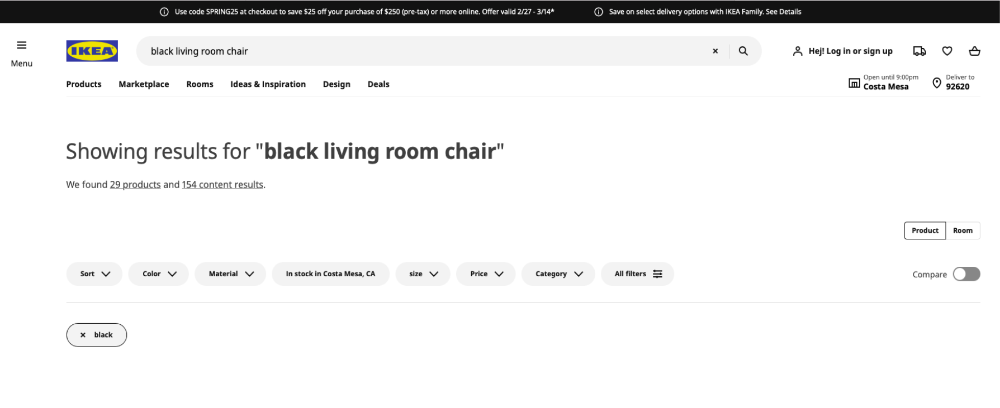

IKEA User Experience Evaluation
A user analysis of IKEA's website

My Role(s)
UX Researcher
External Links
There are no external links for this project.
Introduction
Ikea is a global leading brand for affordable home goods. In fact, there are 460 IKEA stores
in 62 markets globally. Their website plays a crucial role in catering it to its online
shoppers. As such, it is imperative that the website is user-friendly, efficient, and
effective in providing the optimal shopping experience. To ensure the website’s success,
our team of UX experts conducted several user evaluations over the course of three months
based on how well participants could find a specific chair.
Overall, our findings were focused on four specific areas.
System Visibility
Navigation Hierarchy
Error Recovery
Smarter Searching
Expert Evaluation
Approach
We conducted a heuristic evaluation using Jakob Nielsen’s 10 Heuristics to identify potential usability issues in IKEA's website. We focused on the Home, Product, Search Results, and Sidebar pages.
|
Home page |
Product page |
|
Search page |
Cart sidebar |
Summary of Findings
Through our heuristic evaluation, we identified the following:
To improve system visibility:
- Adding a pull-down bar for the shopping menu to see items in cart without having to redirect to another page.
- Saving the previously compared items while the user is still actively shopping.
To reduce user errors:
- Highlighting error messages in red to make them stand out.
- Suggesting products that the user might have mean after an error in search results.
- Adding a confirmation page after users add items to their cart.
- Giving users more control over advanced filtering and search parameters.
Competitive Analysis
Approach
Following the expert evaluation, we determined it would be valuable to audit the digital shopping experience of
IKEA’s direct and indirect competitors.
The competitor evaluation revealed areas IKEA is outperforming their competitors as well as opportunities to learn
from the best practices of these competitors. We believe that implementing the recommendations provided in this
report will improve the digital shopping experience for IKEA customers leading to increased revenue and higher
customer loyalty for IKEA.
| Competitor | Who are they? | Pros from evaluation | Recommendations for IKEA | ||||
|---|---|---|---|---|---|---|---|
| Direct Competitors | |||||||
| Amazon.com Inc (Amazon) is an online retailer and web service provider. The company provides products such as apparel, auto and industrial items, beauty and health products, electronics, grocery, books, games, jewelry, kids and baby products, movies, music, sports goods, toys, tools and other related products. |
Visibility of System Status: Amazon's interface features a clear and easy-to-use navigation menu, and useful searching recommendation list on detailed product browser.
Personalization: Amazon's interface leverages user data to provide personalized recommendations, such as product suggestions based on browsing and purchasing history. Checkout Process: Amazon's checkout process is designed to be quick and efficient, with options for one-click purchasing and saved payment and shipping information. This reduces the friction of purchasing and encourages users to complete their transactions. |
Search functionality improvements such as recommendation list or spelling correction could help shoppers find products easier.
Reduce the friction of the checkout process with clear indication of items added to the cart, option to continue shopping and consider one-click purchasing. |
|||||
| Wayfair is an e-commerce company that specializes in selling furniture, home goods, decor, and other related products online. Wayfair operates primarily through its website, offering a wide range of products from thousands of suppliers. The company provides customers with a broad selection of products across different styles and price points, making it a popular choice for consumers looking for furniture and home decor. |
Image Quality: Wayfair provides high-quality images and videos for its products, which give customers a clear idea of what they are purchasing.
Simple Categorization: Header navigation & high-level filters on the product pages provide shortcuts to help what users might be and are looking for. Personalization: Wayfair's website provides personalized product recommendations to customers based on their browsing and purchase history, which helps to improve their user experience and increase the likelihood of repeat purchases. |
Utilize personalization for a catered experience - giving product recommendation based on search history and related product suggestions once they have added an item to their cart could improve user experience and lead to additional purchases. | Indirect Competitors | ||||
|
As a top retail company, Target has employed innovative methods to stay current through the years, strengthening its digital presence in combination with its in-store experience.
E-commerce plays a significant role for both Target and IKEA. Elevating IKEA’s online experience will increase customer engagement, further strengthening its relationship with customers. |
Customer Engagement: Target does well to keep up with trends and partnerships its loyal customers want to see.
Provides in-store level of experience: Target has seamlessly integrated its digital capabilities with its physical stores through services like Drive Up and Pick Up In-Store. |
IKEA has made efforts to keep up with trends and create collaborations and unique offerings for their customers. Continuing this will set them apart from other home good and furniture retailers.
Look for more ways to connect customer digital interactions with in-store experience. IKEA has done some with their “Shop & Go” feature in the IKEA app. |
Influencer | ||||
|
Founded in 1932 by Ole Kirk Kristiansen, “LEGO” the short hand for the Danish phrase “leg godt”, translated to “play well”, is one of the largest toy manufacturers in the world. Launched in 1958, the LEGO brick is one of their most well known products and has been designated “Toy of the Century” twice.
Both Lego and Ikea offer products that are shipped in multiple pieces, having to instruct the user how all the pieces of the puzzle fit together to achieve the desired outcome and optimal use. |
Flexibility and Efficiency of Use: On the homepage, Lego automatically populates lego set recommendations tailored to your past search history.
Flexibility and Efficiency of Use: Number of pieces and user age recommendation reveal difficulty level of build. |
IKEA could cater the product pages to their customers more with items based on previous searches or profile information about customers.
Consider providing indications of the difficulty of assembly for IKEA products. This would better inform the customer and could mitigate frustrations with harder to assemble items. |
|||||
Focus Areas
Due to the scope of our project and limited time, we focused our efforts on the following issues:
User control and freedom
The website does not make it easy to view items in shopping bag, forcing the user to navigate to a new page in order to see the items they have added.
Clear context design
IKEA’s product filter does not provide a clear indication of the active filters, leaving users confused as to which filters they have selected.
Visibility and hierarchy
The poor information architecture in the menu leads to longer search times.
Viewing the shopping cart takes too many unnecessary steps
User Research
Card Sorting #1
We conducted two separate card sorts to tackle different focus areas.
The goal of the first card sort was to improve product recommendations based on users' searches, and to benchmark the current UI of the IKEA
website. We used Optimal Workshop to conduct a closed card sorting activity. This activity involved grouping product types (e.g. armchairs)
with other product types users consider similar into designated product categories. The product types and product categories were taken from
IKEA's website.
Card Sort #1 - Participant information
We used a standardization grid that showed how participants grouped items into different categories. Each row is an item that participants sorted. The columns show the different groups they sorted them into. The numbers in each cell represent how many people grouped that particular item in that specific category. In other words, products grouped consistently in the same category shows that users see similarities between these products.Card Sort #1 - Standardization Grid
This information was then cross-referenced with IKEA's current website. For instance, 11 out of 13 participants placed "Armchairs" into the "Armchairs and Accent Chairs" category. On IKEA's website, armchairs can be found in the same category. While many items were sorted accurately based on intuition, there were some discrepancies between our data and what we saw on IKEA's website. One example of this is how participants sorted "Benches". Only 1 out of out 13 participants sorted this into the "Storage and Organization" category. However, when users searched for benches on IKEA's website, one of the top categories for its search result was "Storage and Organization".IKEA's Website - Armchairs are found with other armchairs and accent chairs

IKEA's Website - When searching for "benches", many search results are from the "Storage and Organization" category
Card Sorting #2
The goal of the second card sort was to improve the navigation in the menu to make searching easier, and to benchmark the current UI of the IKEA
website. We used Optimal Workshop to conduct a hybrid card sorting activity. This activity involved categorizing items from the hamburger menu
into predetermined groups. Participants also had the option to add their own categories as they see fit.
Card Sort #2 - Participant information
For Card Sort #2, we looked at the hamburger menu on IKEA's website. We took each menu item and had participants sort them through categories we came up with. Participants also had the option to create their own categories. We then had them rank these categories based on how important they felt it was. The screenshot below shows the average position number participants ranked each category in.Card Sort #2 - How participants ranked categories of the menu items
On average, users want to see options relating to Products or their Account on top. However, in IKEA's current menu bar, anything relating to Accounts is at the very bottom in the smallest text.IKEA's Website - Hamburger Menu
Here's a standardization grid for this card sort. This grid gives us more information as to how each menu item is categorized.Card Sort #2 - How participants grouped menu items
Qualitative Usability Testing
We conducted 3 user testing sessions with previous IKEA customers from the US and UK who are familiar with the in-store IKEA experience. Using
UserTesting.com, we conducted live, unmoderated tests to collect verbal and rating-scale responses. We then analyzed these sessions and organized
this data to identify key themes and patterns.
The goals of this test were to:
- Understand first impressions of the IKEA website
- Uncover user expectations of product searches
- Learn how users interact with their shopping bag
| Insight | Supporting Quotes from Participants |
|---|---|
| The user is unsure which menu item will lead them to the product they are searching for. |
"Why isn’t 'chairs' listed on the menu? The categories are a bit confusing.”
“I couldn’t find chairs from the homepage, so I used the search bar to look for chairs instead.” |
| The products listed in the search results page do not match the user’s expectations. |
“I set the color filter to only black but I see blue-colored chairs in this list too.”
“Why are sofa and seat covers showing up when I searched for “living room chair”?” |
| The status of filters is not highly visible to the user. |
“I do not know which filters are set by default.”
“I thought I filtered the results by the price but I do not see the range I am looking for.” |
Quantitative Usability Testing
For our qualitative test, we used Maze.co to administer surveys that participants can use to determine the usability of our prototype of IKEA's
website redesign. We conducted a total of 18 Maze surveys and 17 live interviews through Zoom, and calculated the System Usability Scale (SUS)
scores for the original IKEA website.
SUS scores are determined through a ten-question quiz with responses ranging from "Strongly Agree" to "Strongly Disagree". Through these responses,
we're able to determine a rough measurement of the usability of the site out of 100. Anything below 50 is unacceptable, 50 to 70 is marginal, and
anything above 70 is acceptable. IKEA's website SUS score lands at 80.2, which means that their website is very usable. However, there's room for
improvement.

IKEA's SUS score lands at an 80.2.
Our redesign consisted of very small changes that effectively elevated the user experience based on our collective insights from our user research. For the cart sidebar, we included information about the user's item they added to their cart, and added a quick option to remove that item from their cart. With this redesign:- 97.0% of participants felt that the redesign gave them more confidence that an item had been added to their bag.
- Green check mark iconography provided immediate confirmation.
- Participants mentioned liking the preview of their shopping bag in pop out modal.
- 76.5% of participants used the ‘remove product’ button in the redesigned pop out modal rather than navigating to the full shopping bag view to delete an item.
Original Website - IKEA's cart sidebar |
Our Redesign - IKEA's cart sidebar |
The filter status in the search page was also made clearer through color. Any filter that's applied to the search page is highlighted in yellow to show that it's active. With this redesign:
- 97.1% of participants felt that the redesign gave them more confidence that the color filter is on.
- Some people did not immediately see the ‘black’ color chip, leading to user confusion and frustration. Participants mentioned the yellow colored chip made it “easier to spot” that the color filter was in use.
|  | |
Original Website - IKEA's search page |
Our Redesign - IKEA's search page |
Summary of Actionable Recommendations
To summarize our findings:
-
Search Page
- Provide status indicators in order to denote which filters are currently in use.
- Make the appropriate filters automatically turn on when key words are typed into search bar.
- Improvements to the search bar functionality such as error correction and relevant, more personalized recommendations could lead to more purchases.
- When a filter is in use, the product search results should only show items that fit the filter criteria (currently the ‘black’ filter will also show chairs that are not black).
-
Cart Sidebar
- Add confirmatory iconography to bolster user confidence that they are using the system correctly.
- Giving the user more control over the functionality of the shopping bag, including a simpler way to see items currently in their bag, will result in an improved experience on the IKEA site.
Next Steps
There were many insights that we found through our user research that we weren't able to address in our redesign due to time constraints. In the future, we would take the opportunity to run additional tests with more users to gain further data to create the best personalized virtual experience for IKEA’s customers.
References
- https://www.ikea.com/
- https://www.tesco.com/
- https://www.amazon.com/
- https://www.wayfair.com/
- https://www.lego.com/en-us
- https://www.target.com/
- https://www.usability.gov/how-to-and-tools/methods/system-usability-scale.html
- https://www.similarweb.com
- https://research-methodology.net/ikea-segmentation-targeting-positioning-targeting-cost-conscious-customers/
- https://www.optimalworkshop.com/homepage/
- https://maze.co/
- https://www.usertesting.com/
Aditi Kisara | Amanda Xu | Ashley Ngo | Christine Hong | Evan Cox | Poornima Jhanji | Shrimathi Vetri